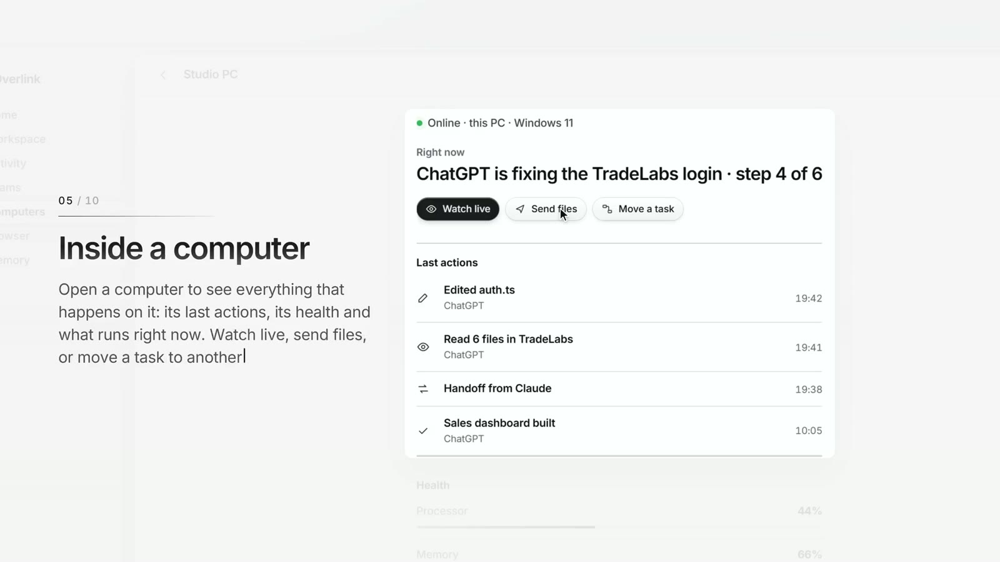

Overlink. Die KI-Chats, die du schon nutzt, arbeiten auf deinen eigenen Rechnern.PocketLM. Ein Modell mit 671 Milliarden Parametern auf einem Laptop mit 16 GB.TradeLabs. Charts, Recherche und Trades in einer App.Licht. Alle KI-Chats nebeneinander auf einer Fläche.
Genauer hingeschaut.

Desktop-Agent · Private Beta bald
Overlink verbindet die KI-Chats, die du schon nutzt, mit deinen eigenen PCs. Sie können über einen Link mit Dateien, Terminal und Browser auf vielen Rechnern arbeiten. Jeder Schritt wird in einfachen Worten festgehalten, und riskante Schritte warten auf dein OK.
PocketLM lässt große KI-Modelle auf normaler Hardware laufen. Ohne Grafikkarte, ohne Cloud. Statt das ganze Modell in den Speicher zu laden, holt es nur die Teile, die jedes Wort braucht. Von Grund auf in Python und C++ geschrieben.
TradeLabs bringt Charts, Recherche und meine eigenen Trades an einen Ort. Jeder Markt mit den Nachrichten neben dem Chart, und jeder vergangene Trade mit dem, was ich damals gelesen habe. Es handelt nie von selbst. Eine Codebasis für Web und Handy.
Licht legt ChatGPT, Codex und Claude Code auf eine endlose Fläche. Jeder Chat ist eine Karte, die du verschieben und gruppieren kannst. Lass zwei KIs dieselbe Aufgabe lösen, oder eine übernehmen, wenn der anderen das Kontingent ausgeht.
Keine Übergaben zwischen Designer, Entwickler und KI-Spezialist. Ich plane, gestalte, baue und teste selbst. So geht unterwegs nichts verloren, und du sprichst immer mit der Person, die den Code schreibt.
Lässt ein671BParameter-Modell mit PocketLM auf einem Laptop mit 16 GB laufen
Abgesichert durch900+automatische Tests in Overlink
Über mich
Hi, ich bin Issa.
Ich bin freiberuflicher KI-Entwickler aus Esslingen bei Stuttgart. Alles auf dieser Seite, von Overlink bis zu dieser Seite selbst, habe ich selbst geplant, gestaltet und gebaut. Ich arbeite auf Deutsch und Englisch, mit Kunden überall.
Agenten, die echte Aufgaben auf echten Systemen erledigen. Sie lesen, entscheiden und handeln, und sie fragen vor allem Riskanten nach. Wie Overlink ›
Desktop- und Web-Apps mit klarer Oberfläche. Interne Werkzeuge, die dein Team jeden Tag nutzt, oder Produkte, die du verkaufen kannst. Wie Licht ›
Websites, die wirken wie eine Top-Produktseite. Klares Design, flüssige Bewegung und schnell auf jedem Handy, von der Landingpage bis zur ganzen Website. Wie overlinkapp.com ›
KI-Modelle auf deiner eigenen Hardware. Keine Cloud, keine monatliche Rechnung pro Frage, und deine Daten bleiben bei dir. Wie PocketLM ›
Bewertungen
Was Kunden sagen.
Noch keine Bewertungen. Bewertungen erscheinen hier nur, wenn echte Kunden sie schicken, Wort für Wort.
Tester
Teste es vor allen anderen.
Bekomm eine Nachricht von mir, wenn etwas Neues zum Testen bereit ist. Overlink, PocketLM, TradeLabs, Licht und alles, was noch kommt. Kostenlos, und du kannst jederzeit aufhören.
Fragen
Gut zu wissen.
Was kostet ein Projekt?
Das hängt von der Größe ab. Nach den Fragen oder einem kurzen Gespräch bekommst du einen Festpreis schriftlich, bevor irgendeine Arbeit beginnt. Ändert sich später etwas, sage ich dir den Preis, bevor ich es umsetze.
Wie lange dauert es?
Mit dem Angebot bekommst du einen Zeitplan, aufgeteilt in Schritte. Jeden Schritt siehst und testest du unterwegs, damit du immer weißt, wo das Projekt steht.
Wie läuft ein Projekt ab?
Du beantwortest die Fragen oder wir telefonieren. Du bekommst einen Plan, einen Zeitplan und einen Preis. Ich baue in Schritten und zeige dir jeden davon. Du testest, ich verbessere, wir starten. Danach halte ich es auf Wunsch am Laufen.
Wem gehört das Ergebnis?
Sobald es bezahlt ist, bekommst du die Rechte, es für seinen Zweck zu nutzen, und den Code, wenn wir das vereinbaren. Die Details stehen in den AGB.
Kannst du an etwas arbeiten, das es schon gibt?
Ja. Ich kann bestehende Apps, KI-Werkzeuge und Websites erweitern, reparieren oder neu gestalten. Füg einfach einen Link in den Projektfragen hinzu.
Sind meine Daten bei dir sicher?
Alles zu deinem Projekt behandle ich vertraulich, und ich unterschreibe gern eine Geheimhaltungsvereinbarung. Bei KI-Projekten können die Daten auf Wunsch auf deinen eigenen Rechnern bleiben.
Arbeitest du auch mit Kunden außerhalb Deutschlands?
Ja. Ich arbeite auf Deutsch und Englisch, per E-Mail und Videoanruf.
Wie bezahle ich?
Per Überweisung nach Rechnung. Größere Projekte werden in Teilen bezahlt, wie im Angebot vereinbart.
Wie schnell antwortest du?
Meist innerhalb von zwei Werktagen.
Ich nutze eine deiner Apps und brauche Hilfe.
Erzähl mir, was passiert ist, und ich helfe dir.
Kontakt
Du hast etwas vor?
Beantworte ein paar Fragen zu deinem Projekt, und ich melde mich mit einem Plan, einem Zeitplan und einem Preis.